Ab dem 01. August gelten folgende Preise:
Beratung
Beratung
Was? Beratung per Telefon oder E-Mail - Hier können alle Fragen rund um das Thema Assistenzhunde besprochen werden
Preis ca. 15 Minuten kostenlos, danach 20,00 € / 15min
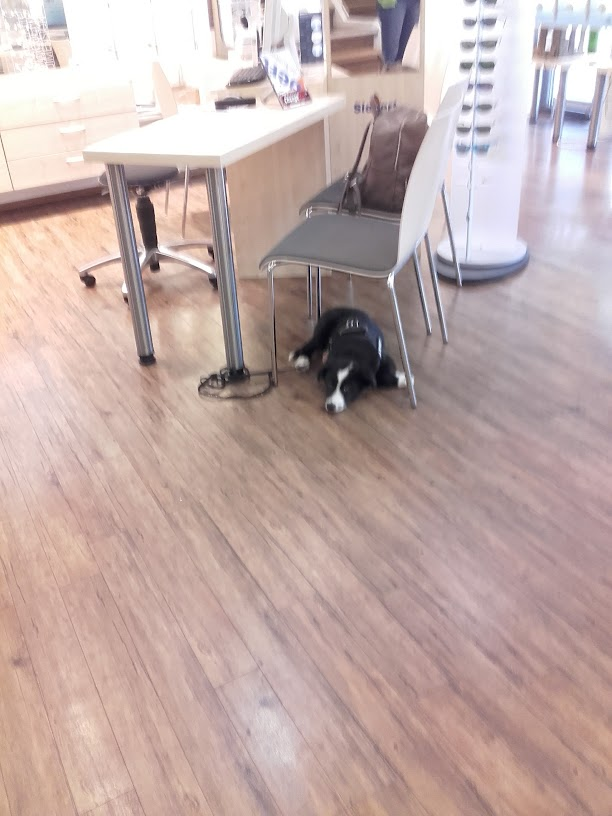
Erstgespräch / Kennenlerntermin
Erstgespräch / Kennenlerntermin
Was? Bei einem persönlichen Kennenlernen können Mensch, Hund und Assistenzhundetrainer herausfinden, ob die Vorstellungen und Vorgehensweisen zueinander passen. Außerdem kann das weitere Vorgehen besprochen werden
Preis 100,00 €
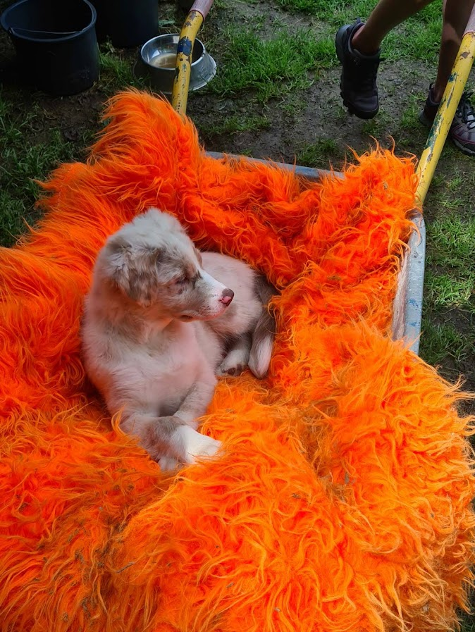
Kurs Hundeeinzug
Kurs Hundeeinzug
Was? Ein Hund steht kurz vor dem Einzug - von Anfang an alles richtig machen! Wir bereiten Sie auf den Einzug Ihres Vierbeiners vor. Bitte vereinbaren Sie rechtzeitig einen Termin, um spätestens eine Woche vor dem Einzug teilnehmen zu können. So können von Tag eins an unnötige Fehler vermieden und Unklarheiten und Unsicherheiten beseitigt werden.
Dauer ca. 2h
Preis 150,00 €

Einzelstunde
Einzelstunde
Was? Ein für Sie und Ihren Hund individuell vorbereitetes Training, welches an den Orten stattfindet, wo Ihr Hund später arbeiten soll. Das kann in der Fußgängerzone, am Bahnhof, im Restaurant oder auch bei Ihnen Zuhause sein. Laut aktueller Gesetzgebung müssen vor einer Prüfung zum Assistenzhund mindestens 60 Einzelstunden bei einem Assistenzhundetrainer absolviert werden. Um den Überblick nicht zu verlieren, werden das Training ebenso wie die Hausaufgaben bis zur nächsten Einzelstunde dokumentiert.
Dauer 60min
Preis Grundausbildung: 70,00 € + Fahrtkosten / Spezialisierung: 100,00 € + Fahrtkosten
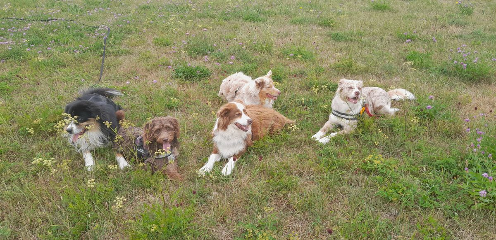
Gruppenstunde
Gruppenstunde
Was? In Kleingruppen mit 2 - 3 Mensch-Hunde-Teams werden an verschiedenen Orten verschiedene Sachen geübt, um die Ablenkung und damit den Schwierigkeitsgrad nach und nach zu steigern. So lernt der zukünftige Assistenzhund, später auch unter Ablenkung und in Anwesenheit anderer Hunde seinen Job zu machen.
Dauer 60min
Preis 40,00 € pro Team
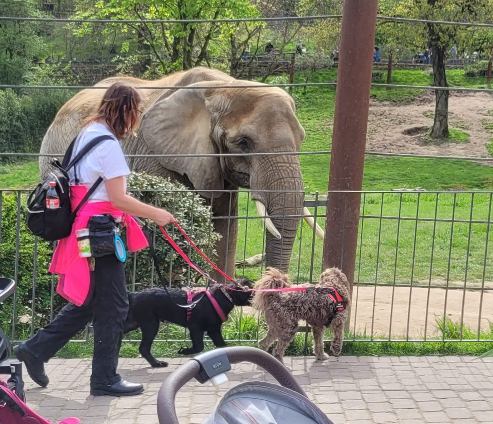
Themenkurs
Themenkurs
Was? Theoriekurs / Erste Hilfe beim Hund / Medicaltraining / Clickertraining - alle Kurse finden mit maximal 5 Teilnehmern statt
Preis 350 €
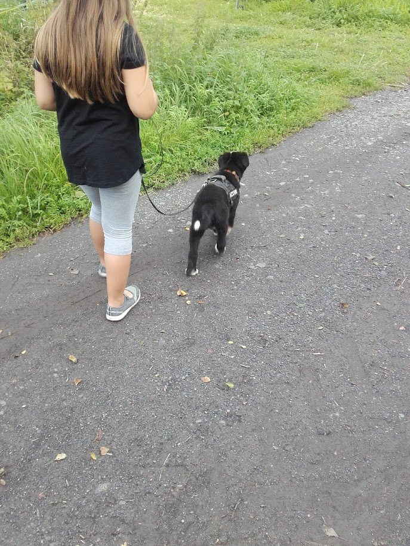
Social Walk
Social Walk
Was? Mit mindestens 3 Mensch-Hunde-Teams sind wir unterwegs, um den Hunden das ruhige Miteinander und einen souveränen Umgang mit Hundebegegnungen zu vermitteln. Anders als bei Gruppenstunden gibt es beim Social Walk kein Ziel, auf welches hingearbeitet wird. Die gemeinsame Zeit kann außerdem zum Austausch der Menschen untereinander genutzt werden.
Dauer ca 1h
Preis 25 €
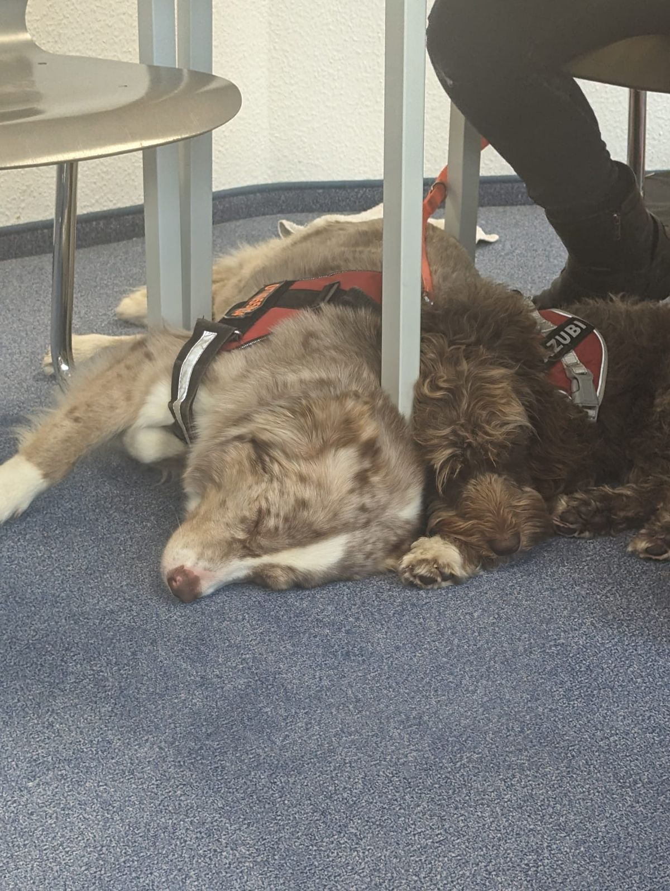
Blockunterricht
Blockunterricht
Was? Blockunterricht bieten wir als Wochenend- oder Tagessemiar an. Wir kombinieren Theorie und Praxis und bieten so eine attraktive Möglichkeit u. a. für Personen, die weiter weg wohnen oder bei denen eine Einzelstunde wegen vieler Fragen und Anliegen nicht ausreicht. Der Blockunterricht findet in der Regel an Orten statt, an denen Sie sich gewöhnlich viel aufhalten und an denen Ihr Hund Ihnen helfen soll.
Dauer ca 4 h mit Pausen
Preis 350 €
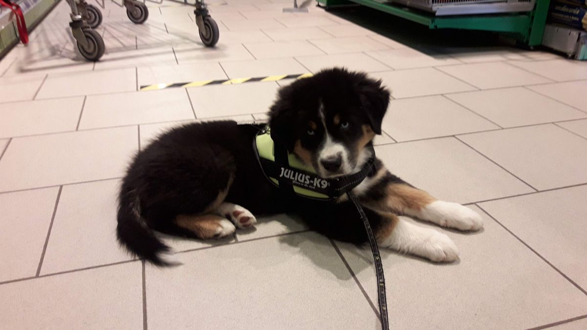
Eignungstest vorhandener Hund
Eignungstest vorhandener Hund
Was? Jeder Hund, der eine Ausbildung zum Assistenzhund bei Helfende Assistenzhundepfoten im Grund beginnen soll, muss vorab auf seine Eignung getestet werden. Hierfür werden über 70 Tests mit dem Hund durchgeführt. Das Alter und der Ausbildungsstand des Hundes werden dabei berücksichtigt.
Preis 350 € + Fahrkosten pro Km
Dauer Test: ca 180 min / Auswertung durch Assistenzhundetrainer: ca 180min
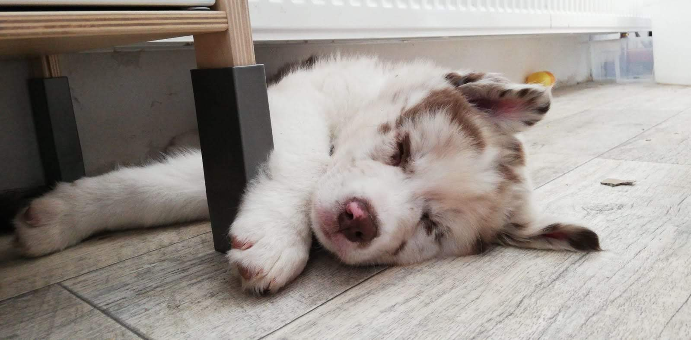
Welpen-Test beim Züchter
Welpen-Test beim Züchter
Was? Möchten Sie einen Welpen anschaffen, der eine Ausbildung zum Assistenzhund absolvieren soll, ist es sinnvoll, bereits vor der Anschaffung auf die richtigen Merkmale zu achten. Etwa 1 / 100 Hunden kann LPF- oder PSB-Assistenzhund bzw. Epilepsieanzeigehund werden, 1 / 500 Hunden eignet sich als Signalhund und nur 1 / 1000 Hunden ist als Diabetiker-, Epilepsie- oder Schlaganfallwarnhund geeignet. Einen Welpenwurf zu testen nimmt in der Regel einen ganzen Tag in Anspruch, da jeder Welpe anhand von über 70 Tests bewertet werden muss.
Preis maximal zwei Welpen: 350 € + Kilometerpauschale / weitere Welpen: + 50 €
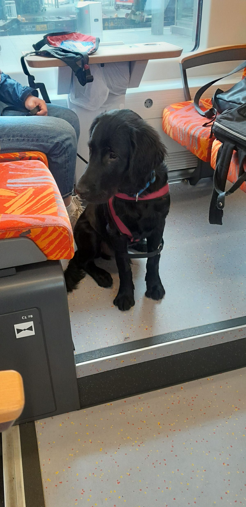
Tests im Heranwachsen
Tests im Heranwachsen
Was? Jeder angehende Assistenzhund muss eine 15-Monats-Test / einen Public-Access-Test vorweisen können, um zur Prüfung zugelassen zu werden. Die Tests werden gefilmt und weitergeleitet.
Preis 350 € + Fahrkosten
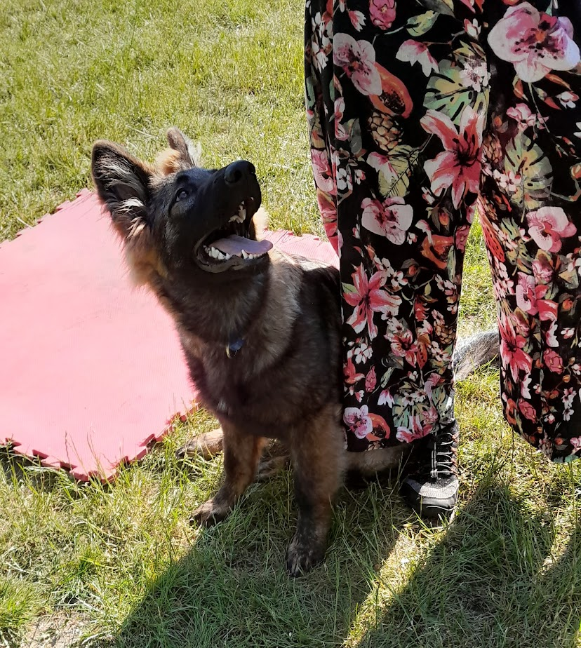
Prüfungsvorbereitung
Prüfungsvorbereitung
Was? Wenn der angehende Assistenzhund alles gelernt hat, was er können soll, geht es mit großen Schritten auf die staatliche Prüfung zu. Damit Sie und Ihr Hund die Prüfung bestmöglich überstehen, bieten wir Ihnen Stunden zur Prüfungsvorbereitung an.
Preis 100,00 € pro Stunde
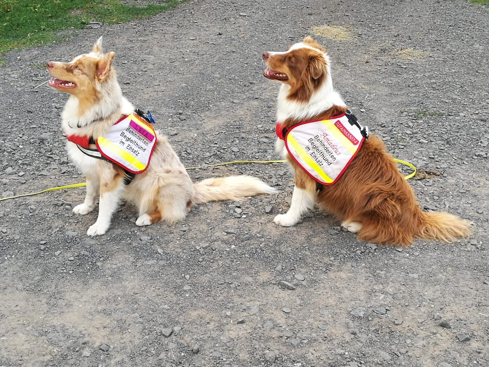
Nachbetreuung
Nachbetreuung
Was? Auch nach absolvierter Prüfung kann es zu Problemen kommen. Selbstverständlich stehen wir Ihnen weiterhin zur Seite. Außerdem dienen regelmäßige Nachbetreuungsstunden dazu, zu überprüfen, ob die Standards eingehalten werden.
Preis 100 € pro Stunde
Hinweis
Alle Tests, die wir durchführen (Welpentests, Test eines vorhandenen Hunds, Public Access Test, ...) müssen zur späteren Auswertung und zur Sicherstellung der Qualität unserer Arbeit auf Video festgehalten und ggf. anderen Assistenzhundetrainern gezeigt werden. Die Videos werden keinesfalls ins Internet gestellt, werden aber als Dokumentation des Lernfortschritts bis zur Prüfung des Assistenzhundes aufbewahrt. Ist ein Hund nicht geeignet oder wurde die Assistenzhundeprüfung erfolgreich absolviert, werden die Videos gelöscht.